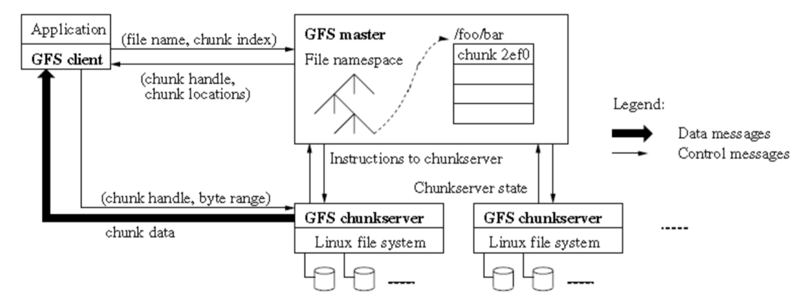
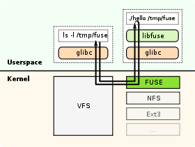
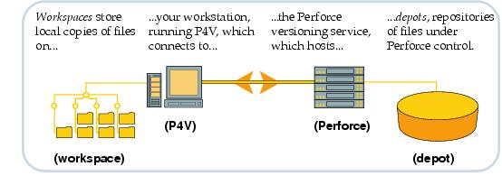
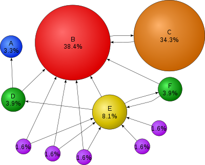

For this research paper, the company whose tech stack I had researched was Google, and I have found information on the languages they use, their tools and software they use, how they deal with version control, as well as the number of search requests they handle every year.
The majority of the tools and software used by Google are not open source, and therefore cannot be researched. However, there are some that are publicly available, such as the Google File System (GFS), BigTable, FUSE and IDE. The GFS uses a single master to send multiple chunk servers to multiple clients, as illustrated in the figure below.

The authors of the paper, Ghemawat, Gobioff, & Leung, explains how the system works as such:
“First, using the fixed chunksize, the client translates the file name and byte offset specified by the application into a chunkindex within the file. Then, it sends the master a request containing the file name and chunk index. The master replies with the corresponding chunk handle and locations of the replicas. The client caches this information using the file name and chunkindex as the key. The client then sends a request to one of the replicas, most likely the closest one. The request specifies the chunk handle and a byte range within that chunk. Further reads of the same chunkrequire no more client-master interaction until the cached information expires or the file is reopened.”
The chunks sent are 64 MB in size, and stored as a plain Linux file on a chunkserver, only being extended as needed. The larger chunk sizes are useful because it means the amount of times the client needs to contact the master is just once, as well as reducing the size of the metadata stored on the master. The metadata stored on the master includes file and chunk namespaces, mapping from files to chunks, and locations of each chunk’s replicas.
Google BigTable is a distributed, column-oriented data store that is used as the database for many of Google’s features, such as Google’s App engine datastore, Google Personalized Search, Google Analytics, and Google Earth. BigTable was designed with apps requiring massive scalability in mind, with its first iteration being made with the intent of being used with petabytes of data.Google uses a software called Filesystem in Userspace, or FUSE, which is a software interface that allows non-privileged users to create their own file systems without editing the kernel code. Below is a diagram of how it works.

Google also uses Integrated Development Environments, or IDE. According to wikipedia, IDE is a software application that is used to edit source code, build automation tools, and do debugging. Designed to maximize the productivity of programmers, IDEs have a single program where all development is done. Said program is usually the provider of many features, such as authoring and modifying, compiling, deploying, and debugging software. IDEs are used to make piecing together development utilities easier. This makes it much simpler when editing code, as it can be parsed while being edited so that the feedback is instant when errors are made.
Perforce is the repository of choice for Google, who owns the busiest and one of the largest single repo servers. With more than twelve thousand users and over a million changes over the decades, Perforce is very similar to Github in how it is used, sending local files to Perforce repositories when edited. The following diagram shows how Perforce works.

According to my research, the main languages used in programming at Google are C++ and Java, as well as Python, according to Google Goggles’ lead tech engineer David Petrou. C++ is primarily used in all of Google’s open source projects, due to its power as a programming language, while Python and Java are used for less intense projects (such as application engines and parts of YouTube).
Google, being the most popular search engine and one of, if not the most, powerful internet based companies in the world, deals with a massive amount of requests every second. On average, over forty thousand search requests are sent every second, which adds up to roughly 3.5 billion requests daily, and 1.2 trillion requests annually. Google uses an algorithmic program, Pagerank, to rank the results of each search. Below is an example of how Pagerank works, from wikipedia’s page on the topic:

Mathematical PageRanks for a simple network, expressed as percentages. (Google uses a logarithmic scale.) Page C has a higher PageRank than Page E, even though there are fewer links to C; the one link to C comes from an important page and hence is of high value. If web surfers who start on a random page have an 85% likelihood of choosing a random link from the page they are currently visiting, and a 15% likelihood of jumping to a page chosen at random from the entire web, they will reach Page E 8.1% of the time. (The 15% likelihood of jumping to an arbitrary page corresponds to a damping factor of 85%.) Without damping, all web surfers would eventually end up on Pages A, B, or C, and all other pages would have PageRank zero. In the presence of damping, Page A effectively links to all pages in the web, even though it has no outgoing links of its own.
By using all of the previously stated tools, programs, languages, and systems in their tech stack, Google has become a powerful giant in the newly emerged business that is the internet, and has become a household name that is often considered synonymous with the internet, specifically when it comes to surfing. Since Google is ever growing, the list of what they use will also grow, and the older tools will eventually become open source, allowing for other businesses and web designers to use their tools to improve their own work.